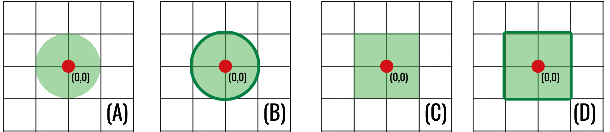

Metric Spaces
Measuring distance, nearness, and perturbation
Computational topology begins with a deceptively simple question:
What does it mean for two things to be close?
On the real line, the distance between \(x\) and \(y\) is naturally \(|x-y|\). In the plane, we might measure the length of the straight segment joining two points. On a street grid, however, the number of horizontal and vertical blocks may be more useful. For two digital images, we may instead care about the largest change in intensity at any pixel.
These examples measure different things, but they share a small collection of rules. A metric space isolates those rules and gives us a precise language for distance, neighbourhoods, convergence, and continuity. Later, the same language will quantify how much a topological summary can change when an image is perturbed.
By the end of this chapter, you should be able to:
- verify whether a function is a metric;
- compare common metrics on \(\mathbb{R}^n\);
- work with metric subspaces, bounded sets, and open balls;
- explain how a metric determines a topology;
- recognise continuous, Lipschitz, and distance-preserving maps; and
- compute the supremum distance between two digital images.
The expression
\[ d\colon X\times X\to[0,\infty) \]
simply says that \(d\) accepts two points of \(X\) and returns a nonnegative real number. The set \(X\) need not consist of geometric points: its elements could be graphs, functions, or entire digital images. The abstraction lets one definition of distance cover all of these cases.
1 What is a metric?
Definition 1 (Metric space) Let \(X\) be a set. A metric on \(X\) is a function
\[ d\colon X\times X\longrightarrow [0,\infty) \]
such that, for every \(x,y,z\in X\):
- Non-negativity: \(d(x,y)\geq 0\).
- Identity of indiscernibles: \(d(x,y)=0\) if and only if \(x=y\).
- Symmetry: \(d(x,y)=d(y,x)\).
- Triangle inequality: \(d(x,z)\leq d(x,y)+d(y,z)\).
The pair \((X,d)\) is called a metric space.
The first three axioms formalise familiar properties of distance. The triangle inequality says that travelling through an intermediate point \(y\) cannot be shorter than the distance from \(x\) directly to \(z\):
\[ d(x,z)\leq d(x,y)+d(y,z). \]
When checking a proposed metric, the triangle inequality is usually the only non-immediate axiom.
Lemma 1 (Reverse triangle inequality) In every metric space \((X,d)\) and for all \(x,y,z\in X\),
\[ \bigl|d(x,z)-d(y,z)\bigr|\leq d(x,y). \]
Proof. The triangle inequality gives \(d(x,z)\leq d(x,y)+d(y,z)\), hence \(d(x,z)-d(y,z)\leq d(x,y)\). Interchanging \(x\) and \(y\) gives \(d(y,z)-d(x,z)\leq d(x,y)\). Combining the two inequalities proves the absolute-value bound.
1.1 A first example: the real line
On \(\mathbb{R}\), define
\[ d(x,y)=|x-y|. \]
This is the usual distance between real numbers. For example, \(d(-2,3)=5\). Its triangle inequality is the familiar absolute-value inequality
\[ |x-z|\leq |x-y|+|y-z|. \]
1.2 A non-example
The function
\[ q(x,y)=|x-y|^2 \]
is not a metric on \(\mathbb{R}\). It satisfies non-negativity, identity, and symmetry, but it fails the triangle inequality. Taking \(x=0\), \(y=1\), and \(z=2\) gives
\[ q(0,2)=4 \quad\text{but}\quad q(0,1)+q(1,2)=1+1=2. \]
One failed axiom is enough: \(q\) is not a metric. This example is a useful warning that modifying a valid metric can destroy its metric properties.
2 Common metrics on \(\mathbb{R}^n\)
For points
\[ \mathbf{x}=(x_1,\ldots,x_n), \qquad \mathbf{y}=(y_1,\ldots,y_n) \]
in \(\mathbb{R}^n\), three metrics appear frequently. Each is induced by a norm:
\[ d_p(\mathbf x,\mathbf y)=\lVert\mathbf x-\mathbf y\rVert_p. \]
| Name | Notation | Distance between \(\mathbf x\) and \(\mathbf y\) |
|---|---|---|
| Manhattan | \(d_1\) | \(\displaystyle \sum_{i=1}^n |x_i-y_i|\) |
| Euclidean | \(d_2\) | \(\displaystyle \left(\sum_{i=1}^n |x_i-y_i|^2\right)^{1/2}\) |
| Chebyshev | \(d_\infty\) | \(\displaystyle \max_{1\leq i\leq n}|x_i-y_i|\) |
The names describe three different geometries:
- \(d_1\) measures travel parallel to the coordinate axes;
- \(d_2\) measures straight-line distance; and
- \(d_\infty\) records only the largest coordinate difference.
Consider \(\mathbf{x}=(1,2)\) and \(\mathbf{y}=(4,6)\). Then
\[ \begin{aligned} d_1(\mathbf{x},\mathbf{y})&=|1-4|+|2-6|=7,\\ d_2(\mathbf{x},\mathbf{y})&=\sqrt{(1-4)^2+(2-6)^2}=5,\\ d_\infty(\mathbf{x},\mathbf{y})&=\max\{3,4\}=4. \end{aligned} \]
The points have not changed, but the question used to compare them has. There is no universally correct metric: the appropriate choice depends on which features of the problem should count as near.
Proposition 1 (Comparison of the standard norms) For every \(\mathbf v\in\mathbb R^n\), these norms satisfy
\[ \lVert\mathbf v\rVert_\infty \leq \lVert\mathbf v\rVert_2 \leq \sqrt n\,\lVert\mathbf v\rVert_\infty, \qquad \lVert\mathbf v\rVert_2 \leq \lVert\mathbf v\rVert_1 \leq \sqrt n\,\lVert\mathbf v\rVert_2. \]
Proof. Since every coordinate satisfies \(|v_i|\leq\lVert\mathbf v\rVert_\infty\),
\[ \lVert\mathbf v\rVert_2^2 =\sum_i|v_i|^2 \leq n\lVert\mathbf v\rVert_\infty^2. \]
Also, the largest squared coordinate is one term in the sum, so \(\lVert\mathbf v\rVert_\infty\leq\lVert\mathbf v\rVert_2\). Next, \(\lVert\mathbf v\rVert_2\leq\lVert\mathbf v\rVert_1\) follows after squaring because the square of the sum contains all squares plus nonnegative cross terms. Finally, Cauchy–Schwarz gives
\[ \lVert\mathbf v\rVert_1 =\sum_i |v_i|\cdot1 \leq \left(\sum_i|v_i|^2\right)^{1/2} \left(\sum_i1^2\right)^{1/2} =\sqrt n\,\lVert\mathbf v\rVert_2. \]
They may assign different numerical distances, but none can become small while another remains arbitrarily large in a fixed finite dimension. This observation will help explain why they induce the same open sets on \(\mathbb R^n\).
The set \(X\) does not determine distance by itself. The metric is part of the structure. Thus \((\mathbb{R}^2,d_1)\) and \((\mathbb{R}^2,d_2)\) are different metric spaces even though they have the same underlying points.
2.1 The discrete metric
Every set admits at least one metric. Define
\[ d_{\mathrm{disc}}(x,y)= \begin{cases} 0,&x=y,\\ 1,&x\neq y. \end{cases} \]
This is the discrete metric. It treats every pair of distinct points as equally far apart. The example is useful because it reminds us that a metric does not require coordinates, angles, or a surrounding Euclidean space.
To check the triangle inequality, observe that its left-hand side is at most \(1\). If \(x\neq z\), then at least one of \(x\neq y\) or \(y\neq z\) holds, so the right-hand side is at least \(1\).
3 Subspaces and bounded sets
Suppose \((X,d)\) is a metric space and \(S\subseteq X\). Restricting \(d\) to pairs of points in \(S\) gives a metric
\[ d|_{S\times S}\colon S\times S\longrightarrow\mathbb{R}. \]
The resulting metric space is called a metric subspace of \(X\).
For example, the integer lattice \(\mathbb{Z}^2\) becomes a metric subspace of \((\mathbb{R}^2,d_2)\) when it inherits Euclidean distance. Alternatively, we could equip the same lattice with \(d_1\) or \(d_\infty\). These choices encode different notions of adjacency on a pixel grid.
A subset \(S\subseteq X\) is bounded if it fits inside a ball of finite radius: there are \(x_0\in X\) and \(R>0\) such that
\[ d(x_0,s)<R \qquad\text{for every }s\in S. \]
When \(S\) is bounded, its diameter is
\[ \operatorname{diam}(S) = \sup\{d(x,y):x,y\in S\}. \]
The diameter measures the greatest possible separation between points of the set. The supremum need not be attained: a set can have a finite diameter without containing a pair of points exactly that far apart.
4 Open balls and neighbourhoods
Let \((X,d)\) be a metric space, let \(x\in X\), and let \(\varepsilon>0\). The open ball of radius \(\varepsilon\) centred at \(x\) is
\[ B_\varepsilon(x) = \{y\in X:d(x,y)<\varepsilon\}. \]
An open ball collects all points sufficiently near its centre. Its shape depends on the metric:
- in \((\mathbb{R}^2,d_1)\), balls look like diamonds;
- in \((\mathbb{R}^2,d_2)\), balls are ordinary discs;
- in \((\mathbb{R}^2,d_\infty)\), balls look like axis-aligned squares.

Although these regions look different, they play the same logical role: they describe what it means to vary a point by less than a chosen tolerance.
The corresponding closed ball is
\[ \overline B_\varepsilon(x) = \{y\in X:d(x,y)\leq\varepsilon\}. \]
4.1 Open and closed sets
A subset \(U\subseteq X\) is open if every point of \(U\) has a sufficiently small open ball that remains inside \(U\). Formally, for every \(x\in U\), there is some \(\varepsilon>0\) such that
\[ B_\varepsilon(x)\subseteq U. \]
A subset \(C\subseteq X\) is closed if its complement \(X\setminus C\) is open.
Open and closed are not opposites in ordinary language. A set may be both open and closed, or neither. In every metric space, \(\varnothing\) and \(X\) are both open and closed. In \(\mathbb R\) with the usual metric, \([0,1)\) is neither: it contains no open ball around \(0\), while its complement contains no open ball around \(1\).
5 From a metric to a topology
This is the first deliberate increase in abstraction. Until now, a metric has returned numerical distances. We will now retain only the open sets determined by those distances. Think of this as discarding the ruler while keeping every possible answer to the question “which points are sufficiently near this one?” The next chapter studies what survives after that numerical information has been forgotten.
Let \(\mathcal{T}_d\) be the collection of all open subsets of \((X,d)\). This collection satisfies:
- \(\varnothing,X\in\mathcal{T}_d\);
- every union of members of \(\mathcal{T}_d\) belongs to \(\mathcal{T}_d\); and
- every finite intersection of members of \(\mathcal{T}_d\) belongs to \(\mathcal{T}_d\).
These are precisely the axioms of a topology. We therefore call \(\mathcal{T}_d\) the topology induced by the metric \(d\).
Theorem 1 (Every metric induces a topology) The collection \(\mathcal T_d\) of open subsets of a metric space \((X,d)\) is a topology on \(X\).
Proof. Both \(\varnothing\) and \(X\) are open: the first condition is vacuous for \(\varnothing\), while every ball about a point of \(X\) lies in \(X\).
Let \(\{U_\alpha\}_{\alpha\in A}\) be open and let \(x\in\bigcup_{\alpha\in A}U_\alpha\). Choose \(\alpha_0\) with \(x\in U_{\alpha_0}\). Some ball \(B_\varepsilon(x)\) lies in \(U_{\alpha_0}\) and hence in the union. Thus arbitrary unions are open.
Finally, let \(x\in U_1\cap\cdots\cap U_n\), where every \(U_i\) is open. Choose \(\varepsilon_i>0\) with \(B_{\varepsilon_i}(x)\subseteq U_i\) and put \(\varepsilon=\min_i\varepsilon_i\). Then \(B_\varepsilon(x)\subseteq\bigcap_iU_i\). Therefore finite intersections are open.
Topology remembers which sets are open but forgets the numerical distances that produced them. This is our first move from geometry toward topology: exact measurements become less important than the qualitative structure of neighbourhoods.
Different metrics can induce the same topology. For example, \(d_1\), \(d_2\), and \(d_\infty\) all determine the usual topology on \(\mathbb{R}^n\). They disagree about exact distances and the shapes of balls, but agree about which subsets are open. The norm inequalities above allow a sufficiently small ball for one metric to be placed inside a ball for another.
6 Convergence and continuity
A sequence \((x_m)_{m\geq 1}\) in \((X,d)\) converges to \(x\in X\) if
\[ \text{for every }\varepsilon>0,\text{ there is }N \text{ such that }m\geq N\implies d(x_m,x)<\varepsilon. \]
We write \(x_m\to x\). In words, the terms of the sequence eventually enter every open ball around \(x\) and remain there.
Now let \((X,d_X)\) and \((Y,d_Y)\) be metric spaces. A function \(f\colon X\to Y\) is continuous at \(x_*\in X\) if, for every \(\varepsilon>0\), there is a \(\delta>0\) such that
\[ d_X(x,x_*)<\delta \quad\Longrightarrow\quad d_Y\bigl(f(x),f(x_*)\bigr)<\varepsilon. \]
Continuity says that sufficiently small changes to the input produce controlled changes to the output. Equivalently, whenever \(x_m\to x\), a continuous function satisfies \(f(x_m)\to f(x)\).
For example, \(f\colon\mathbb R\to\mathbb R\) given by \(f(x)=3x\) is continuous. Given \(\varepsilon>0\), choosing \(\delta=\varepsilon/3\) gives
\[ |x-x_*|<\delta \quad\Longrightarrow\quad |f(x)-f(x_*)|=3|x-x_*|<\varepsilon. \]
6.1 Lipschitz maps and isometries
A map \(f\colon X\to Y\) is Lipschitz if there is a constant \(L\geq 0\) such that
\[ d_Y\bigl(f(x),f(y)\bigr) \leq L\,d_X(x,y) \]
for every \(x,y\in X\). The number \(L\) is a global bound on how much \(f\) can amplify distances.
Proposition 2 (Lipschitz maps are continuous) Every Lipschitz map between metric spaces is continuous.
Proof. Suppose \(f\) has Lipschitz constant \(L\). If \(L=0\), then \(d_Y(f(x),f(y))=0\) for all \(x,y\), so \(f\) is constant and therefore continuous. If \(L>0\), given \(\varepsilon>0\), choose \(\delta=\varepsilon/L\). Then
\[ d_X(x,x_*)<\delta \quad\Longrightarrow\quad d_Y(f(x),f(x_*)) \leq Ld_X(x,x_*)<\varepsilon. \]
An isometry is a map that preserves all distances:
\[ d_Y\bigl(f(x),f(y)\bigr)=d_X(x,y). \]
Translations and rotations of Euclidean space are isometries under \(d_2\). They move a configuration without changing its internal geometry. Every isometry is \(1\)-Lipschitz and therefore continuous.
6.2 Rigid motions of Euclidean space
The stability problem later in these notes distinguishes an ideal geometric motion from the resampling error produced when that motion is represented on a pixel grid. The ideal motion has the form
\[ \psi(x)=Rx+\mathbf t, \]
where \(R\) is an orthogonal matrix (\(R^\mathsf TR=I\)) and \(\mathbf t\) is a translation vector. Rotations and reflections are encoded by \(R\); translations are encoded by \(\mathbf t\).
Lemma 2 (Rigid-body transformations are isometries) Let \(\psi\colon\mathbb R^n\to\mathbb R^n\) be given by \(\psi(x)=Rx+\mathbf t\), where \(R^\mathsf TR=I\). Then \(\psi\) is an isometry for the Euclidean metric.
Proof. For \(x,y\in\mathbb R^n\),
\[ \begin{aligned} \|\psi(x)-\psi(y)\|_2^2 &=\|R(x-y)\|_2^2\\ &=(x-y)^\mathsf TR^\mathsf TR(x-y)\\ &=(x-y)^\mathsf T(x-y) =\|x-y\|_2^2. \end{aligned} \]
Both norms are nonnegative, so taking square roots gives \(\|\psi(x)-\psi(y)\|_2=\|x-y\|_2\).
The inverse is explicit:
\[ \psi^{-1}(y)=R^\mathsf T(y-\mathbf t). \]
Thus a rigid motion is not merely distance-preserving; it is bijective and has a continuous inverse. In the continuous setting, it does not alter the topological type of a shape. The difficulty begins only when its output must be sampled back onto a discrete grid.
Stability theorems have the flavour of a Lipschitz bound. They compare a distance between inputs with a distance between topological summaries:
\[ \text{output change}\leq\text{input change}. \]
Metric spaces make both sides of such a statement meaningful.
7 The supremum metric on functions
Here the “points” of the metric space are functions. In the image application, one point is therefore one whole image. If \(I\) and \(J\) are two images on the same pixel grid, then
\[ \|I-J\|_\infty \]
is a single number describing their worst pixelwise disagreement. This change of viewpoint—from pixels as points to images as points—is easy to miss and is central to the later stability theorem.
Computational topology often studies bounded real-valued functions
\[ f\colon X\longrightarrow\mathbb{R}. \]
Let \(\mathcal B(X,\mathbb R)\) denote the set of bounded functions from \(X\) to \(\mathbb R\). For \(f,g\in\mathcal B(X,\mathbb R)\), define
\[ d_\infty(f,g) = \lVert f-g\rVert_\infty = \sup_{x\in X}|f(x)-g(x)|. \]
The supremum is the smallest number that is at least as large as every value \(|f(x)-g(x)|\). It is needed when \(X\) is infinite and a largest value might not actually be attained. On a finite image grid, no subtlety remains: the supremum is simply the largest entry in the difference image.
This is a metric on \(\mathcal B(X,\mathbb R)\). Boundedness ensures that the distance is finite. If \(X\) is a finite pixel grid, the supremum is simply a maximum, so the distance between two equally sized images is the largest pointwise intensity difference.
For example, consider two \(2\times2\) grayscale images:
\[ f= \begin{pmatrix} 0&2\\ 3&5 \end{pmatrix}, \qquad g= \begin{pmatrix} 1&2\\ 4&2 \end{pmatrix}. \]
Their absolute pointwise difference is
\[ |f-g|= \begin{pmatrix} 1&0\\ 1&3 \end{pmatrix}, \]
so \(\lVert f-g\rVert_\infty=3\).
This metric deliberately ignores how many pixels changed. It records the largest change at any one pixel. That is exactly the quantity appearing in the classical stability bound for sublevel-set persistent homology:
\[ d_B\bigl(\operatorname{Dgm}(f),\operatorname{Dgm}(g)\bigr) \leq \lVert f-g\rVert_\infty. \]
We will define persistence diagrams and the bottleneck distance in later chapters. For now, the inequality says that controlling the largest input change controls the change in the topological output.
7.1 A small implementation
import numpy as np
def supremum_distance(f, g):
"""Largest pointwise difference between equally shaped arrays."""
f = np.asarray(f, dtype=float)
g = np.asarray(g, dtype=float)
if f.shape != g.shape:
raise ValueError("The arrays must have the same shape.")
return np.max(np.abs(f - g))
f = np.array([[0, 2], [3, 5]])
g = np.array([[1, 2], [4, 2]])
print(supremum_distance(f, g)) # 3.0The mathematics tells us which quantity to compute; the code is a direct translation of the definition.
8 Chapter summary
- A metric is a distance function satisfying four axioms.
- The underlying set does not determine its metric.
- Open balls describe local neighbourhoods and generate open sets.
- Open sets induced by a metric form a topology.
- Lipschitz maps control distance globally; isometries preserve it exactly.
- For images, the supremum metric records the largest pointwise intensity change and will drive the stability theory of persistent homology.
9 Exercises
- Compute \(d_1\), \(d_2\), and \(d_\infty\) between \((2,-1)\) and \((-1,3)\).
- Show that \(d(x,y)=2|x-y|\) is a metric on \(\mathbb{R}\).
- Explain precisely where \(q(x,y)=|x-y|^2\) fails to be a metric.
- Describe \(B_1(0)\) in \(\mathbb{R}\) with the usual metric. How does it differ from \(\overline B_1(0)\)?
- Let \(X=\{a,b,c\}\) have the discrete metric. List every open ball of radius \(1/2\) and every open ball of radius \(2\).
- Prove that every singleton is open in a discrete metric space.
- Suppose two grayscale images have intensities in \([0,255]\). What is the largest possible supremum distance between them?
- Prove that every isometry is Lipschitz and therefore continuous.
- For bounded functions \(f,g,h\colon X\to\mathbb R\), prove the triangle inequality \(\lVert f-h\rVert_\infty\leq \lVert f-g\rVert_\infty+\lVert g-h\rVert_\infty\).
- The coordinate differences are \(3\) and \(4\), so \(d_1=7\), \(d_2=5\), and \(d_\infty=4\).
- Multiplying a metric by a positive constant preserves all four metric axioms. In particular, the triangle inequality follows by multiplying \(|x-z|\leq|x-y|+|y-z|\) by \(2\).
- With \(x=0\), \(y=1\), and \(z=2\), the triangle inequality would require \(4=q(0,2)\leq q(0,1)+q(1,2)=2\), which is false.
- The open ball is \((-1,1)\). The closed ball is \([-1,1]\) and includes its endpoints.
- For radius \(1/2\), the balls are \(\{a\}\), \(\{b\}\), and \(\{c\}\). Every ball of radius \(2\) is all of \(X\).
- For any \(x\in X\), the ball \(B_{1/2}(x)\) is exactly \(\{x\}\). Hence every singleton is open.
- The largest possible distance is \(255\), achieved when some pixel has value \(0\) in one image and \(255\) in the other.
- An isometry satisfies the Lipschitz inequality with equality and \(L=1\). Given \(\varepsilon>0\), choose \(\delta=\varepsilon\) to prove continuity.
- For each \(x\in X\), the ordinary triangle inequality gives \(|f(x)-h(x)|\leq|f(x)-g(x)|+|g(x)-h(x)|\). Each term on the right is bounded by its supremum. Taking the supremum over \(x\) proves the result.
10 What comes next
A metric gives us more than numerical distances: it gives us open sets and therefore a topology. The next chapter will keep the open-set structure while allowing us to forget the metric. This abstraction is what makes it possible to recognise the same shape across very different geometric realisations.